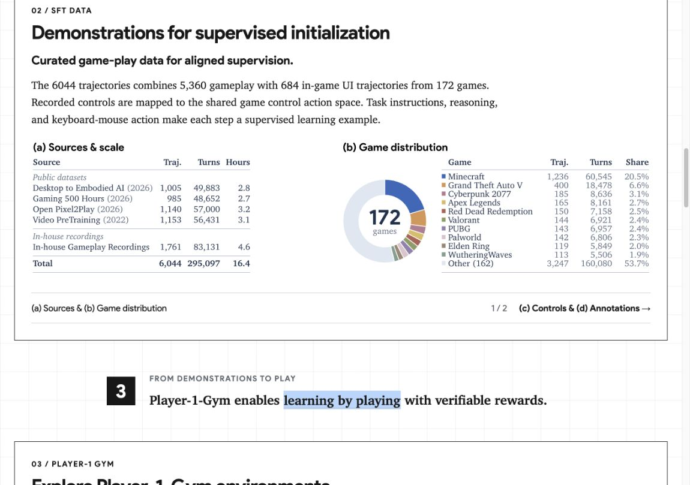
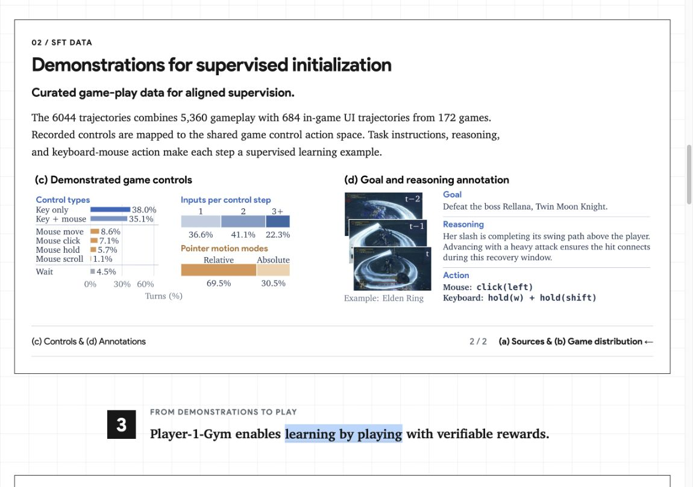
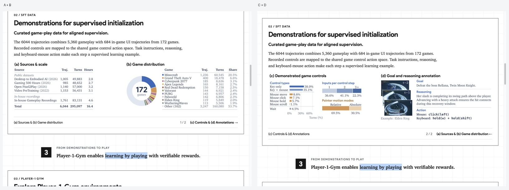
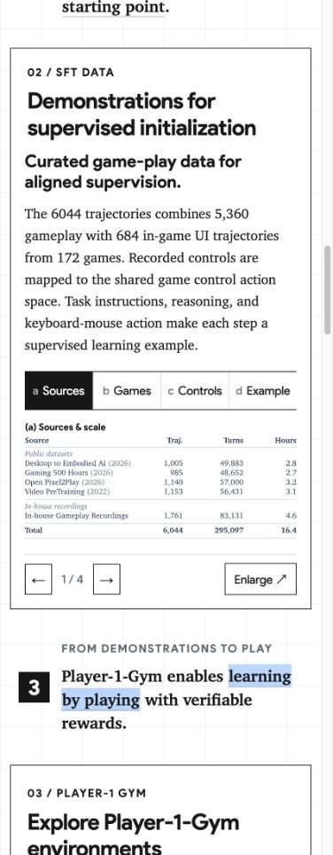

数据图表翻页与高亮间距
2026-10-13 · 桌面端将 A+B、C+D 放在同一个水平翻页窗口。手机端逐图浏览，翻页和放大共享当前图表状态。
1 · A+B
复查通过：完整显示现有数据图表，页码为 1/2，入口显示“(c) Controls & (d) Annotations →”，点击后切换到对应图表。

2 · C+D
复查通过：水平切换后显示 C+D，入口显示“(a) Sources & (b) Game distribution ←”，点击后返回对应图表。两页窗口高度均为 225.206 CSS px；图表比例保持稳定。

3 · 放大与键盘
复查通过：点击四个图表的对应区域可进入放大图库；图库跨越 B/C 时同步切换主窗口，关闭后焦点回到当前图表。方向键、Home 和 End 可翻页，非当前页的入口停止响应键盘。

4 · 手机
390 CSS px 下，标题间距为 12 px，四页图表浏览正常。763 CSS px 桌面入口完整显示目标图表标题。页面没有横向溢出，最终刷新后没有新增脚本错误。

5 · 鼠标动作高亮
黑底按文字和图标的宽度加左右各 10 px 内边距。left_click 黑底宽 105 px，与两侧箭头各留 20.5 px 间隔（源视频坐标）。已重新生成并查看实际视频帧。
6 · 标题间距
章节大标题与小标题的间距：桌面为 16 px，手机为 12 px。源码与浏览器检查通过，页面无横向溢出。